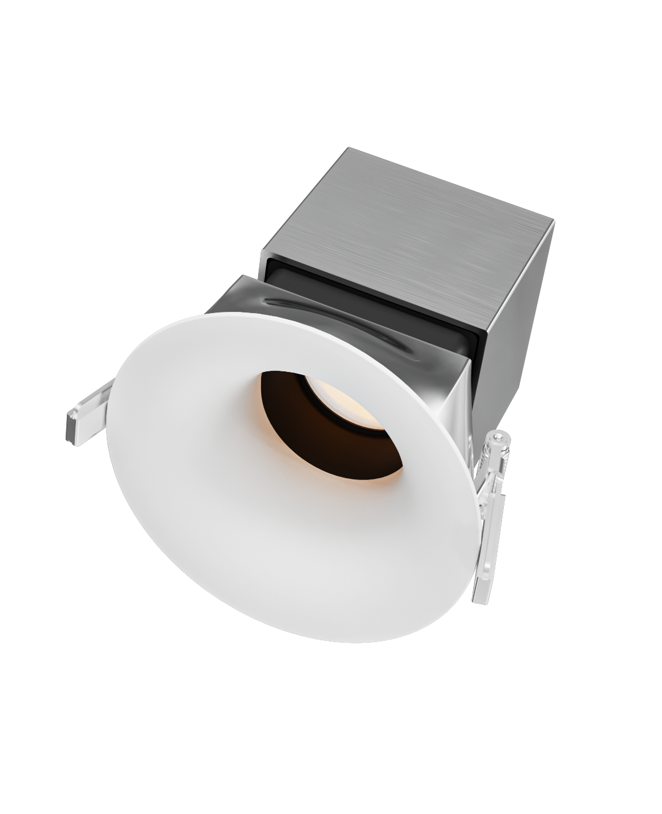
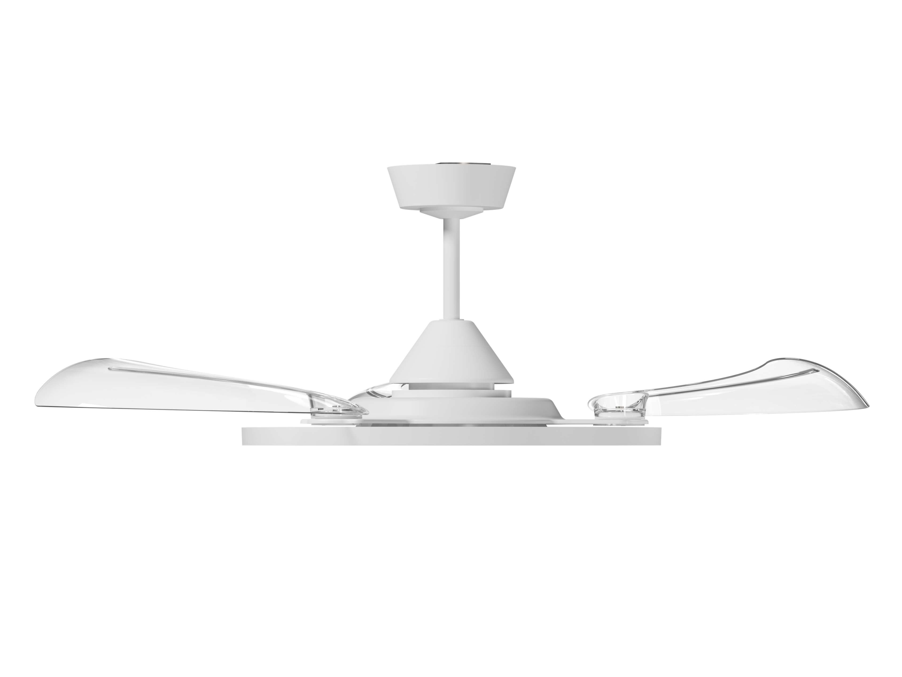
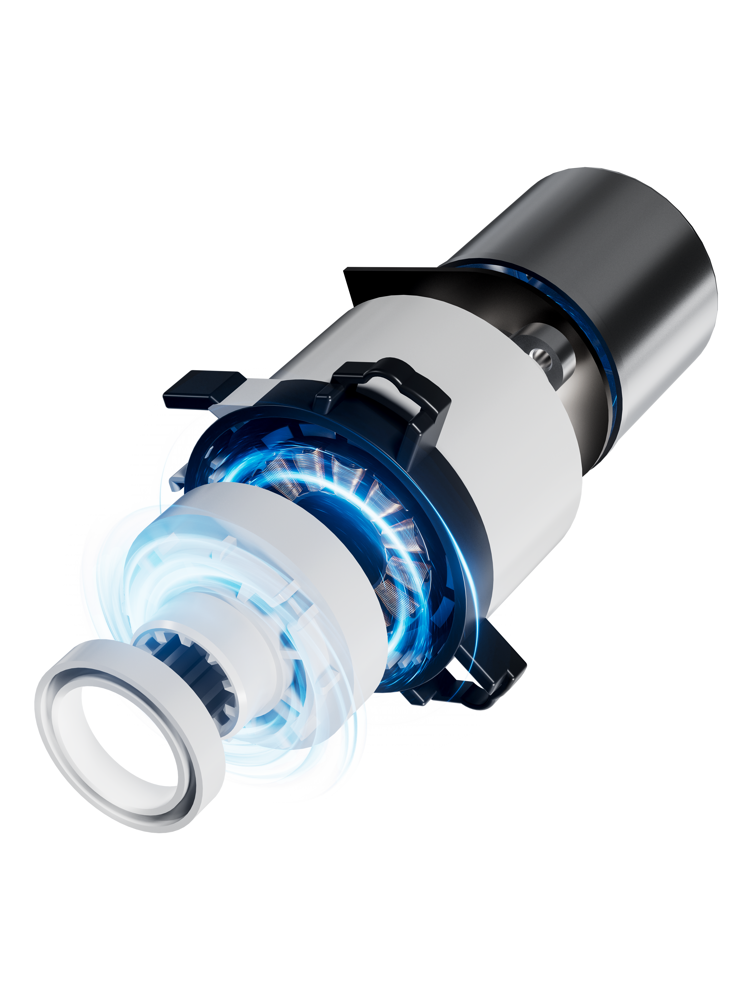

3D MODELING & RENDERING / 3D 建模渲染
裴小勇 / PEI XIAOYONGVISUAL & 3D DESIGNER
FORM / LIGHT / IMAGINATION概念视觉 · 非商业作品
+
产品建模 & 渲染 / 产品动画 / 视觉设计 / AI 创作向下探索 ↓
DESIGN PRACTICE
设计探索
从产品的形态、材质到最终画面，
探索二维与三维之间的表达。
裴小勇 / 3D 建模与渲染
MODELING & RENDERING / 材质 · 形态 · 光影
建模渲染

金属 / 光学 / 结构

透明材质 / 曲面 / 形态

结构 / 材质 / 光效
PEI XIAOYONG — MODELING & RENDERING01 / 03 · 隐界 Pro 射灯
PRODUCT ANIMATION / 产品动画
产品动态影像
AI CONTENT / 场景叙事 · 产品表达
AI 商业短片
从日常生活切入，让产品的功能成为故事的一部分。
建筑渲染、建模渲染、产品动画与 AI 短片均由作者提供；建筑设计稿与白模为 AI 辅助还原。
ABOUT ME
从视觉出发，
向空间延伸。
你好，我是裴小勇。
我毕业于安徽工程大学视觉传达设计专业。从电商详情页、海报设计出发，如今的工作进一步延伸到产品建模渲染、产品动画以及 AI 内容创作。
我关注画面的视觉表达，也关注产品本身。让形态、材质与光影相互配合，让设计成为理解产品的另一种方式。
教育背景↗
安徽工程大学
视觉传达设计 · 2018—2022
EXPERIENCE
经历与成长
3D 设计师 当前
产品建模渲染、产品动画制作、海报设计、AI 内容产出
苏州凯尚服饰
美工 · 详情页、海报设计
南京世纪驰宇有限公司
设计师（实习）· 详情页制作
THANK YOU FOR VISITING
把想象，
变成看得见的设计。
裴小勇 / 视觉与 3D 设计师
产品建模渲染 · 产品动画 · 海报 · AI 内容